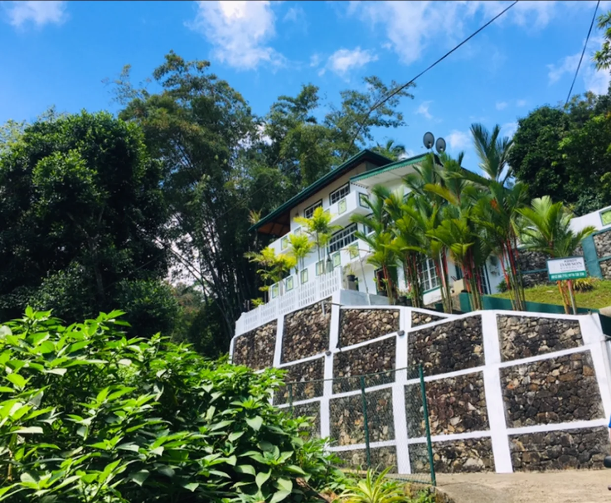

A heritage of hospitality in the heart of Kadugannawa.
Located near the historical Kadugannawa pass, KandyDawsonBungalow has been offering sanctuary to weary travelers and vacationing families for generations. Our estate is surrounded by the lush greenery and breathtaking mountain views that Sri Lanka's hill country is legendary for.
We pride ourselves on offering a perfect blend of colonial charm and modern amenities. Whether you're here to hike the surrounding trails, visit the nearby botanical gardens, or simply escape the busy city life, KandyDawsonBungalow provides the ideal serene environment.
Our dedicated staff are committed to treating every guest like family, ensuring your stay is memorable, comfortable, and truly relaxing. Come experience genuine Sri Lankan hospitality.

Everything you need for a comfortable stay
KandyDawsonBungalow in Kadugannawa offers family rooms with air-conditioning, private bathrooms, and balconies. Each room includes a dining table, work desk, and TV.
Guests enjoy a free airport shuttle service, garden, terrace, and free WiFi. Additional amenities include a lounge, concierge service, and shared kitchen.
Located 38 km from Victoria Reservoir Kandy Seaplane Base, the hotel is near attractions such as Kandy Royal Botanic Gardens (10 km) and Sri Dalada Maligawa (17 km).